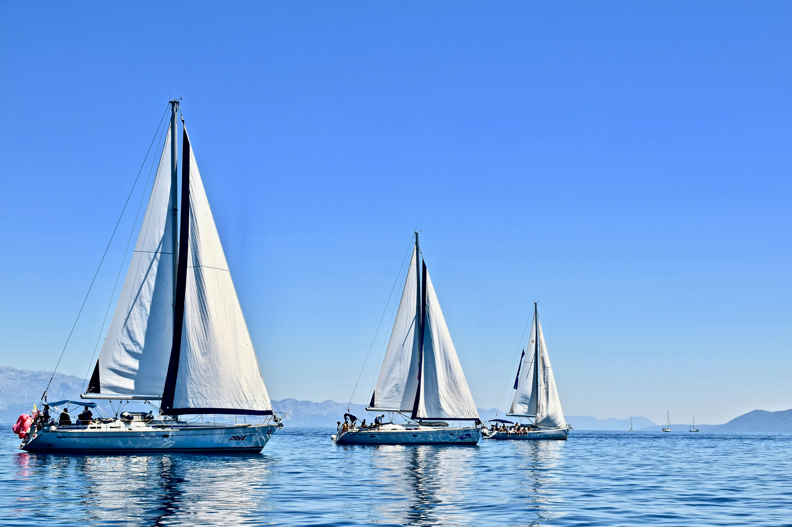
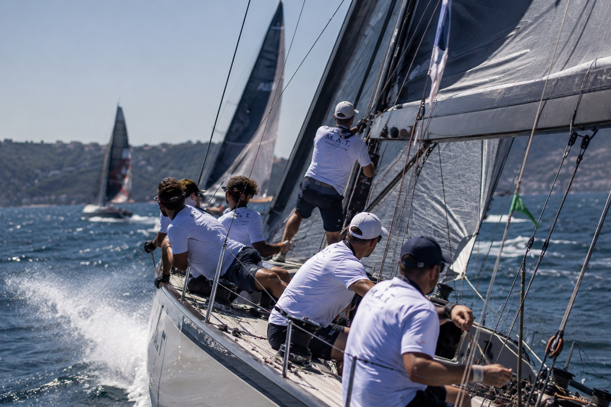
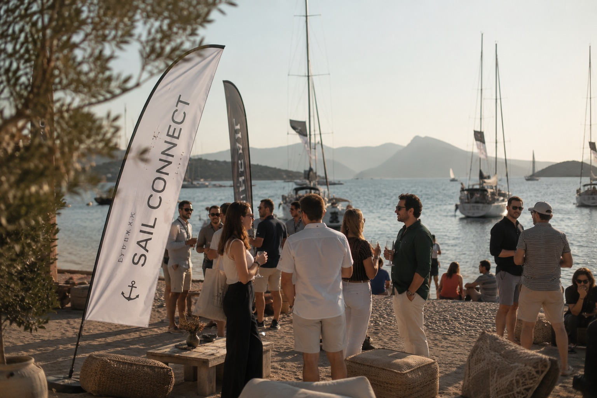
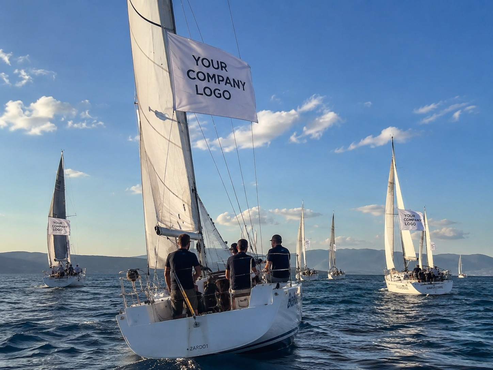

Şirketler Arası Yelken Kupası
Şirketlerin denizde kıyasıya yarıştığı, rekabetin ve sektörel bağlantıların bir arada olduğu üç günlük bir deneyim. Her teknede üç kişi yarışır, şirketiniz dilediği sayıda takımla sahaya çıkabilir. Yelken bilmenize gerek yok, her takıma lisanslı bir dümenci eşlik eder.
Ekibini ofis dışında bir araya getirmek isteyen, çalışanlarına sıradan bir aktiviteden fazlasını yaşatmak isteyen ve markasını diğer şirketlerle aynı sahada görünür kılmak isteyen şirketler için tasarlandı. Sektörünüzden ya da farklı sektörlerden şirketlerle aynı parkurda buluşur, hem rekabet eder hem yeni bağlantılar kurarsınız.
Kayıt Ol
Aynı teknede, aynı hedefe doğru. Ekibiniz ofiste yaşamadığı bir koordinasyonu denizde keşfeder.

Karadaki sosyal alanda diğer şirketlerin ekipleriyle tanışır, rekabeti dostlukla birleştirirsiniz.

Şirketiniz, kurumsal bir yelken kupasında bir takım olarak yer alır. Anlatacağınız bir hikaye, paylaşacağınız bir an biriktirisiniz.

Yelken Kupası sadece bir yarış değil, kurumsal bir festivaldir. Yarış aralarında ve sonrasında Gülbahçe Yelken Kulübü'nün karadaki özel alanlarında DJ performansları, ikramlar ve sosyal alanlar sizi bekler. Denizde rekabet, karada kutlama vardır.
Tanışma, sabah eğitimi ve ilk yarışlar başlar.
Strateji ve hızın ön plana çıktığı yarışlar başlar, akşam barbekü partisi sizi bekler.
Büyük final, sertifika ve madalya teslimi ve ödül töreni.

İzmir körfezine bakan parkuru, rüzgarın en ideal olduğu konumu ve sosyal alanlarıyla profesyonel bir yelken deneyimi sunar. Ege'nin tam ortasında, doğanın kalbinde yarışırsınız.


Tüm tekneler, donanım ve güvenlik ekipmanı organizasyon tarafından sağlanır. Her takıma lisanslı bir dümenci eşlik eder. Üç gün boyunca her gün kumanyanız hazır bekler, akşam yemekleriniz de organizasyon tarafından karşılanır. İkinci günün akşamı sizi bir barbekü partisi karşılar, DJ ve sosyal alan gün boyu yanınızdadır. Denizde güvenlik botları ile sağlık ekibi sürekli hazır bekler.
*Siz yalnızca rahat bir spor kıyafet ve kaymaz tabanlı spor ayakkabı getirirsiniz.
**Dümenci: Tekneyi yöneten ve yarış boyunca ekibe rehberlik eden lisanslı yelkenci.
Konaklama ile ulaşım pakete dahil değildir, talep ederseniz eğer sizin adınıza ek ücretle organize edebiliriz.
Şirketinizi birkaç dakikada kaydedersiniz. 12 saat içinde ekibimiz size geri dönecektir. Hızlı bilgi almak için WhatsApp üzerinden bizimle iletişim kurabilirsiniz..
Yarış kuralları ve parkur bilgisi etkinlikten bir hafta önce size ulaşır. Detaylı yelken eğitimini ise etkinliğin ilk günü sabahı, profesyonel eğitimcilerden alırsınız.
Her gün onlarca yarış yapılır, her yarış 20-30 dakika sürer. Yarış süresi rüzgar hızına bağlıdır. Bir tekne rakibinin teknesinden daha fazla rüzgara maruz kalırsa yarış tekrarlanır.
Etkinliğin son günü sertifikanız teslim edilir, ödül töreni ve kutlama ile yarış taçlanır.
Konaklama ve ulaşım dahil değildir. Talep ederseniz sizin adınıza ek ücretle organize edilir.
Şirketler Arası Yelken Kupası her ayın son haftası, Cuma, Cumartesi ve Pazar günleri düzenlenir.
Her
etkinlik 16 takım, toplam 48 kişiyle sınırlıdır. Her teknede üç kişi yarışır, şirketiniz dilediği sayıda
takımla bu kontenjan içinde yer alabilir.
Yelken Kupası organizasyonları hakkında merak ettiğiniz tüm detaylar ve cevapları.
Şirketlerin ihtiyaçlarına göre iki farklı katılım modelimiz bulunmaktadır:
Hayır, ister Şirketler Kupası'na ister Şirket İçi Yelken Kupası'na katılın, yarışılacak tüm tekneler, donanımlar ve can yeleği gibi güvenlik ekipmanları organizasyonumuz tarafından sağlanmaktadır. Sizin sadece teknede rahat hareket edebileceğiniz spor kıyafetler ve kaymaz tabanlı spor ayakkabılarla gelmeniz yeterlidir.
Kesinlikle. Katılımcıların hiçbir denizcilik veya yelken tecrübesine sahip olması gerekmiyor. Her tekneye organizasyonumuz tarafından profesyonel ve lisanslı bir dümenci atanıyor. Kaptanınız size ne yapmanız gerektiğini anlık olarak söyleyecek ve güvenli bir şekilde yarışmanızı sağlayacak.
Güvenlik en büyük önceliğimizdir. Yarış parkuru tamamen kontrollü bir alanda kurulur ve yarış boyunca denizde hazır bekleyen profesyonel güvenlik botları ile sağlık ekipleri bulunur.
Yarışlar tekne bazlı yapıldığı için, her bir tekne ekibi tam 3 kişiden oluşmaktadır (Dümenci bu sayıya dahil değildir).
Yelken Kupası sadece bir yarış değil, aynı zamanda kurumsal bir festivaldir. Yarış aralarında ve sonrasında Gülbahçe Yelken Kulübü'nün karadaki özel alanlarında DJ performansları, canlı yayın dinletileri, ikramlar ve harika sosyal alanlar sizi bekliyor. (Şirket İçi etkinliklerde bu alanlardaki aktiviteler tamamen kurum kültürünüze göre özelleştirilebilir.)
Hayır, konaklama ve ulaşım standart etkinlik paketimize dahil değildir. Standart paketimiz yarış katılımını, tekne tahsisini, dümenci desteğini ve gün boyu karadaki yeme-içme ile eğlence faaliyetlerini kapsar. Ancak katılımcılarımızın talebi doğrultusunda, ek ücret karşılığında tüm konaklama ve transfer (ulaşım) süreçlerinizi sizin adınıza memnuniyetle organize edebiliriz.
Organizasyonlarımız rüzgarın ve doğanın en güzel uyum sağladığı Urla Gülbahçe Yelken Kulübü'nde gerçekleşmektedir. Şirketler Yelken Kupası için etkinlik takvimimiz dönemsel olarak güncellenmektedir; güncel müsaitlik durumunu web sitemizde yer alan takvim üzerinden inceleyebilirsiniz. Şirket İçi Yelken Kupası taleplerinizde ise tarihler karşılıklı görüşme ile tamamen size uygun şekilde belirlenmektedir.